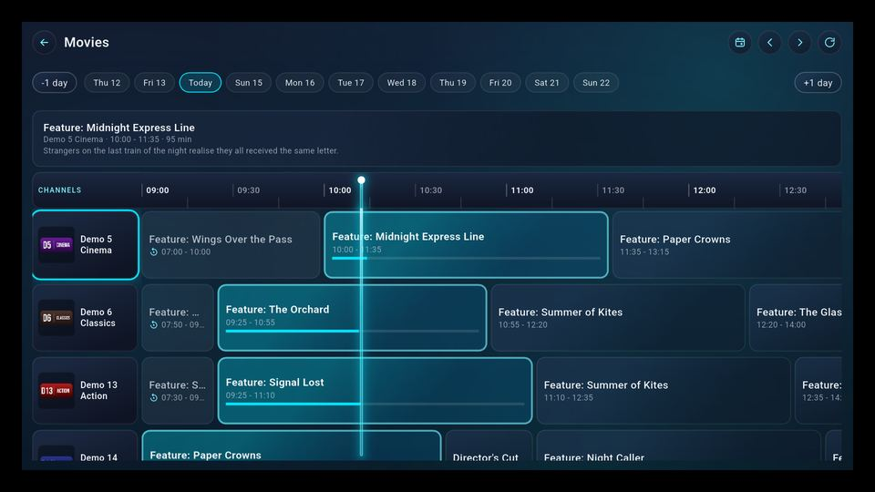

NitaTV适用于 Android TV、平板电脑和手机的 IPTV 播放器
NitaTV 播放的是您自己订阅的服务商提供的视频流，或您的 M3U 播放列表：附节目指南的直播电视、录制、电影和剧集。
免费试用一个月，无需信用卡。

直播电视 
节目指南 
电影和剧集 
电影详情页 
音轨和字幕 
预约录制 
手机版
截图中使用的是演示源：所有名称、图片和节目指南均为虚构。
演示视频：“Sintel” © Blender Foundation, CC BY 3.0 (durian.blender.org)。
⚠ NitaTV 不提供任何频道、电影或其他内容，也不销售或推荐任何服务商。您需要自行向服务商订阅，或拥有一个播放列表。
NitaTV 的功能
- 通过 M3U 播放列表链接或服务商提供的登录信息登录
- 用手机扫描二维码，即可添加您的播放列表
- 直播电视，附节目指南
- 电影和剧集，从上次中断处继续播放
- 录制节目，可立即录制，也可在节目指南中预约
- 下载电影和单集，离线观看
- 投放到 Chromecast 设备
- 选择音轨和字幕
- 多个个人资料、收藏和搜索
- 画中画
- 支持 21 种语言
常见问题
NitaTV 提供频道吗？
不提供。NitaTV 是一款播放器：它播放的是服务商提供给您的内容。它不含任何频道，也不推荐任何服务商。
我需要准备什么？
一个 M3U 播放列表链接，或服务商提供给您的登录信息。您可以在电视上输入，也可以用手机扫描二维码发送。
支持哪些设备？
Android TV 和 Google TV，以及 Android 平板电脑和手机。您还可以从手机或平板电脑投放到 Chromecast。
费用是多少？
免费试用一个月，无需信用卡，每个 Google 账号限一次。之后为年度订阅，可随时在 Google Play 取消。
我的登录信息会如何处理？
您的登录信息仅保存在您设备上的加密保险库中。若通过手机扫描二维码发送，信息会经过端到端加密：我们的服务器无法读取。NitaTV 不含广告，也没有跟踪器。